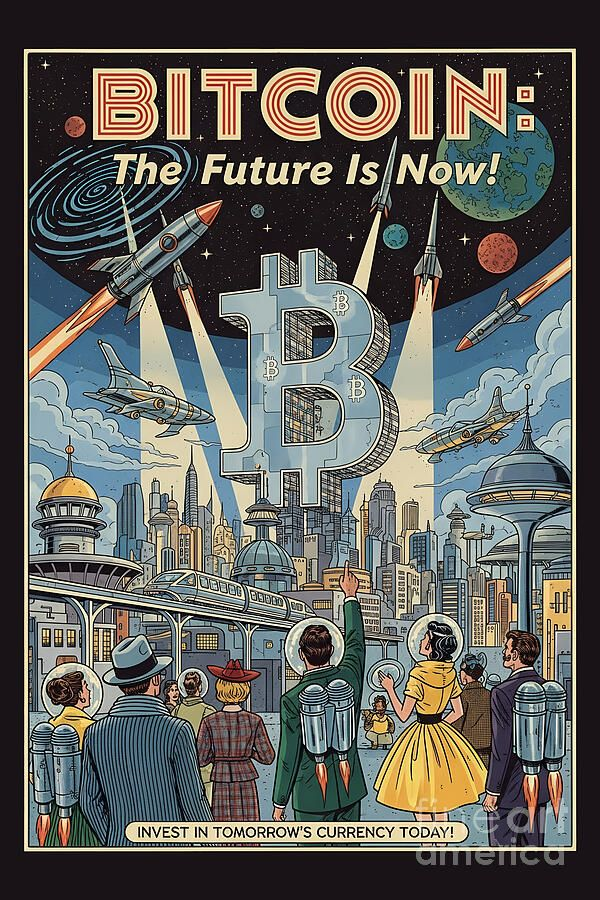

O Limite de 21 Milhões
Diferente das moedas emitidas por governos, que podem ser impressas indefinidamente, o Bitcoin possui uma escassez matemática rigorosa. Foi definido em seu código que apenas 21 milhões de unidades serão mineradas em toda a história. Essa característica o torna o primeiro ativo digital com escassez absoluta. Enquanto a oferta de moedas como o Real ou o Dólar aumenta a cada ano, diluindo o poder de compra da população, o limite fixo do Bitcoin garante que ninguém possa criar novas unidades por vontade própria, protegendo o valor do ativo ao longo do tempo.
O Mecanismo do Halving
A emissão de novos Bitcoins é controlada por um evento chamado Halving, que ocorre aproximadamente a cada quatro anos. Nesse evento, a recompensa dada aos mineradores pela criação de novos blocos é cortada pela metade, reduzindo drasticamente a entrada de novas moedas no mercado. Esse processo garante que a inflação do Bitcoin seja previsível e decrescente, tornando-o cada vez mais difícil de ser produzido. É esse choque entre uma oferta que diminui e uma demanda que cresce que consolida o Bitcoin como a reserva de valor mais eficiente da era digital.
